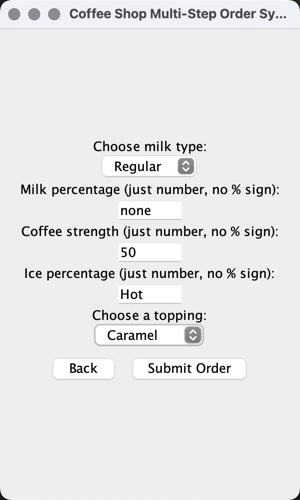
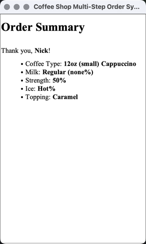
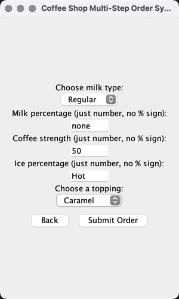
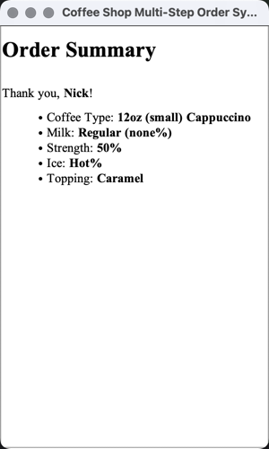

Who you are
Hi there, this is Nick!!
Professional info
I am a student at University of San Diego, majoring in Computer Science.
I am from China, and I have been in the United States for 3 years.
I am looking for graduate school to my master degree: Project management.
Hobbies
Free time: gaming, studying divination and numerology, looking for some fun comp stuff online.
I am open for everyone, and I am a good listener, anything is about comp sci or not, we can chat.
Good luck everyone, and have a wonderful life!!
Projects
 



Coffee Shop Ordering System
Motivation of the project
The reason why I picked this is because ordering systems are pretty common in our daily life
and I wanted to challenge myself to see if I can do one by myself.
It turns out I have a basic structure of how it flows but still need a lot of implementation to make it really usable in real life.
But I am glad that I did this because I learned a lot from optimizing it visually in GUI.
The steps for using it are simple as well.
For the text-based version, basically, it will be asking what you would want, and you only need to type the corresponding number and message into it.
For the GUI, we have three different pages. The first one requires you to input your name and click next.
The second page has options for the type of coffee you would like and what size you would like.
Then the third page is for any additional information that you would like to add, like milk percentage, hot or cold, what milk you prefer, and what toppings you would like to add.
Through pages 2 and 3, you have the ability to click the back button to go back to the previous page to change whatever you would like, and all the information you have added will be saved.
No need to worry about typing it again.
Functional requirements/what the project does
This project is a simple ordering and selecting project.
I have divided the project interaction into two different parts.
The first one is text-based input and output. It still contains more problems than the GUI one, but it is runnable. Users need to follow strictly from the input suggestion or it will crash.
The second one is GUI, which is more visually and user-friendly. It also gives the user the option to go back to change what they did to something new and prints out a better script.
I would personally recommend the GUI one. The format is clean and simple, and it gives more space for users to put the information they prefer and is least likely to crash.
Project design
The design of this project is simple.
First, we need to have a framework for what we want our system to do and what type of information we would like to include,
such as anything related to coffee, milk, coffee beans, price, ice, hot or cold, topping, and so on.
I decided to use Java since my whole semester involved writing this, so I used Java and JFrame, which is already implemented when I picked Java, no more dependencies required.
So based on the project we wrote before, I followed the basic idea we have: interfaces, abstract classes, concrete classes.
The whole structure of the project is clear and straightforward.
Because it is too simple, this project is missing a bit of its functions. I still have a few thoughts that I would like to implement but I ran out of time, so this is as far as I can go by myself.
Implementation
I did this project alone. To be honest, this is not a very hard or complex programming project.
I did a little advance or improved it better by reforming it or presenting it in GUI,
which visually provides better results and releases me from some error handling.
I used Java to implement this project, and I used Java Swing to create the GUI, which decreased further dependencies required.
Contact Me
email address: nickzhou@sandiego.edu